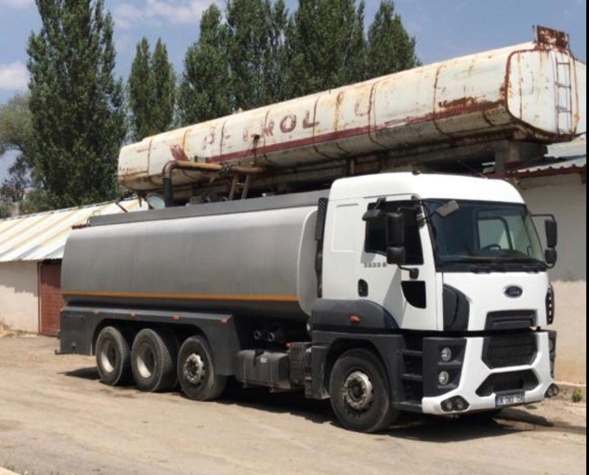
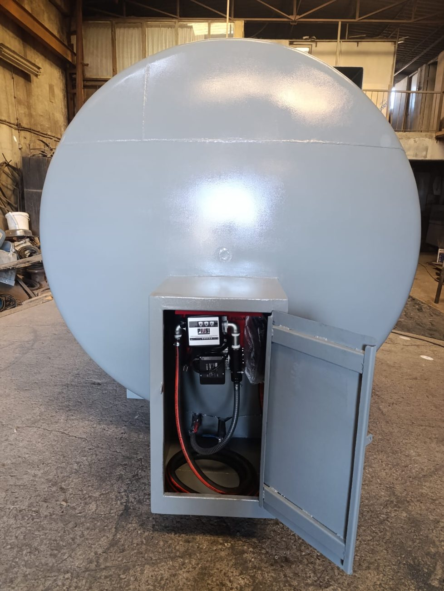
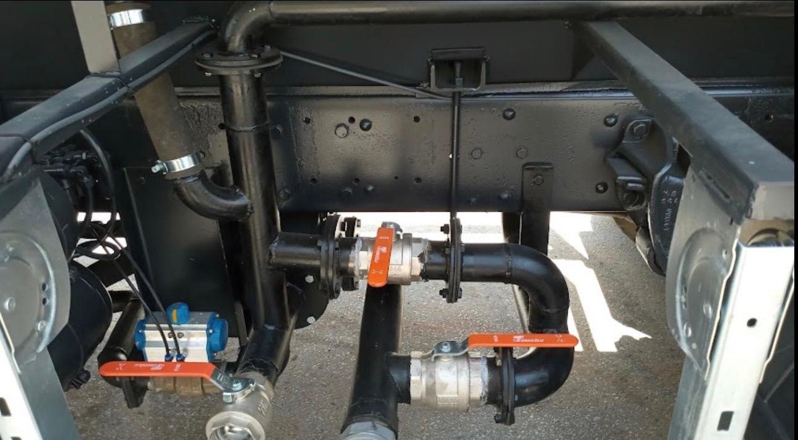
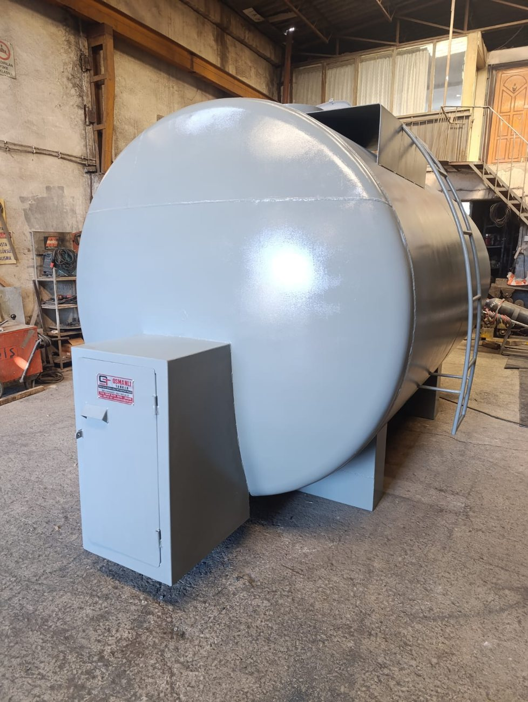

OSMANLI TANKER
GÜCÜNÜZÜN
ARKASINDA BİZ VARIZ.
Su tankeri, arazöz, araç üstü ekipman imalatı ve tanker bakım-onarımında güvenilir çözümler. Ankara Ostim’de hizmetinizdeyiz.
İmalat ve teknik çözümler

GÜÇLÜ İMALAT. SAĞLAM ÇÖZÜMLER.
ÜRÜN KATALOĞU
Ürünlerimiz
Ürün hakkında detay ve fiyat bilgisi almak için WhatsApp üzerinden bize ulaşabilirsiniz.



POMPA VE TESİSAT
Pompa ve Tesisat Sistemleri
Pompa, bağlantı ve araç üstü tesisat çözümleri.
Bilgi al ↗
Fotoğraflar Osmanlı Tanker çalışma ve imalat görsellerinden derlenmiştir. Projeye göre ürün özellikleri değişebilir.
ATÖLYEMİZDEN
İmalat Galerisi
Gerçek üretim ve uygulama fotoğraflarımız.
HİZMETLERİMİZ
İhtiyacınıza uygun
teknik destek.
Ürün, imalat veya tamir ihtiyacınızı paylaşın; detayları birlikte değerlendirelim.
01Tanker ve tank imalatı↗
02Arazöz ve su tankeri ekipmanları↗
03Pompa ve tesisat uygulamaları↗
04Kaynak, tamir ve bakım↗
İLETİŞİM
Projenizi konuşalım.
Ürün bilgisi, teklif veya servis talepleriniz için bize ulaşın.